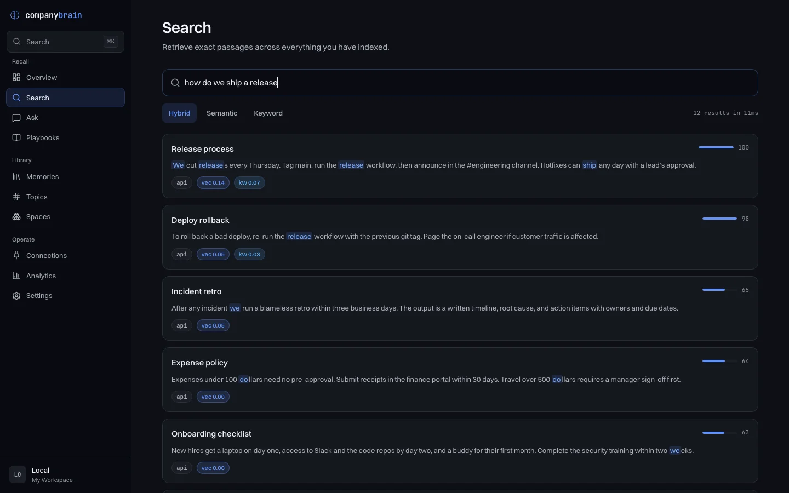

What it does
It reads a source, cuts the text into passages, and indexes every passage twice: once by its words, using Postgres full-text search, and once as a vector, using pgvector. A question is run against both. The two result lists are merged into one, and you get the passages back with their scores and their source.
Connect a language model and it will also write a short answer from those passages. Without one, it shows you the passages and stops there.
Other software can use the same index. There is a REST API, and an MCP server so that Claude, Cursor or your own agent can search it and add to it.
-
A document comes in
From a connector, an upload, or a call to the API.
-
It is cut into passages
About 512 tokens each. Neighbours share 64, so a sentence is not lost at a cut.
-
Each passage is indexed twice
By its words (top) and as a vector of 1,536 numbers (bottom).
-
Two rankings become one
Reciprocal rank fusion. By default the vector ranking counts double.
Twelve questions and what came back
The repository includes a small sample: twelve short company notes (a release process, an
expense policy, where the espresso machine is) and twelve questions that each have one right
note. The table shows where the right note landed in the results, in four setups. It was
recorded on 13 October 2026 from a fresh install of commit e1945a0.
| Question Choose one to see its results | Words full-text only | Vectors built in, no key | Both the default | Both with a model |
|---|---|---|---|---|
| Right note came 1st | Right note came 1st | Right note came 1st | Right note came 1st | |
| Right note came 1st | Right note came 2nd | Right note came 1st | Right note came 1st | |
| Right note came 1st | Right note came 5th | Right note came 2nd | Right note came 1st | |
| Right note came 1st | Right note came 2nd | Right note came 2nd | Right note came 1st | |
| Right note came 1st | Right note came 1st | Right note came 1st | Right note came 1st | |
| Right note came 1st | Right note came 2nd | Right note came 1st | Right note came 1st | |
| Right note came 1st | Right note came 1st | Right note came 1st | Right note came 1st | |
| Right note came 1st | Right note came 1st | Right note came 1st | Right note came 1st | |
| Right note came 1st | Right note came 1st | Right note came 1st | Right note came 1st | |
| Right note came 1st | Right note came 1st | Right note came 1st | Right note came 1st | |
| Right note came 1st | Right note came 1st | Right note came 1st | Right note came 1st | |
| Right note was none | Right note came 1st | Right note came 2nd | Right note came 6th |
What came back, default setup
how do we ship a release?
-
Release processthe right note1.00vectors 0.142, words 0.068
We cut releases every Thursday. Tag main, run the release workflow, then announce in the #engineering channel. Hotfixes can ship any day with a lead's approval.
-
Deploy rollback0.98vectors 0.046, words 0.030
To roll back a bad deploy, re-run the release workflow with the previous git tag. Page the on-call engineer if customer traffic is affected.
-
Incident retro0.65vectors 0.045, no word match
After any incident we run a blameless retro within three business days. The output is a written timeline, root cause, and action items with owners and due dates.
Words shared with the question are marked. The score is relative to the best result for that question, so the first result always reads 1.00.
Each cell is the top five results. The filled square is where the right note was. “Both, with
a model” uses nomic-embed-text running locally through Ollama, which is free and
needs no key.
With nothing configured, the right note came first for 9 of the 12 questions and first or second for all 12. With the embedding model it came first for 11, and sixth for the other.
The last question shows what goes wrong. It asks about an “outage”. The right note says “incident”. The note that came first is about support response times and happens to contain the word “outages”. The built-in vectors are a hash of the words in the text, so they cannot tell that two different words mean the same thing, and here the small embedding model did no better.
Twelve notes is a smoke test. It shows that the install works and the kind of mistake each setup makes. It says very little about how well this will search your documents.
$ node bench/run.mjs --verbose
Run that in a checkout while CompanyBrain is up and it prints the ranks in the “Both, the
default” column. Add --mode keyword or --mode semantic for the
first two.
Asking instead of searching
Asking sends the best passages to a language model along with your question. These are two real replies to “how do we ship a release?”, from the same twelve notes.
No model connected, the default
Here is the most relevant knowledge I found: [1] We cut releases every Thursday. Tag main, run the release workflow, then announce in the #engineering channel. Hotfixes can ship any day with a lead's approval. [2] To roll back a bad deploy, re-run the release workflow with the previous git tag. Page the on-call engineer if customer traffic is affected. [3] After any incident we run a blameless retro within three business days. The output is a written timeline, root cause, and action items with owners and due dates. Sources: [1] Release process [2] Deploy rollback [3] Incident retro
With no model there is nothing to write a sentence, so you get the top three passages.
A small local model, llama3.2 through Ollama
Tag main, run the release workflow, then announce in the #engineering channel. Sources: [1] Release process [2] Deploy rollback [3] Incident retro [4] Expense policy [5] Onboarding checklist [6] Billing system [7] Data retention [8] Support SLA
The sources are every passage the model was shown, in rank order, not only the ones it used. The model is asked to mark each claim with a number like [1]. This one did not, so check the passage before you rely on the sentence.
Run it
-
Run
npx companybrain. It clones the repository into~/.companybrain/appand asks one thing: which model provider to use. Choose “Local only” to start without a key. -
It builds two Docker images and starts three containers: Postgres with pgvector, the API on port 3333, and the dashboard on port 3000. Those two ports and 5432 need to be free.
-
Open
http://localhost:3000. There is no sign-in. Paste some text, drop in Markdown files, or set up a source under Connections. -
Stop it with
npx companybrain down. Your data stays in a Docker volume until you runnpx companybrain uninstall.
Installer 0.6.2, the current release, has a bug: once everything is running it prints error: webPort is not defined and exits. The stack is up regardless, so open the dashboard. The fix is merged and goes out with 0.6.3.

Without Docker
npx companybrain dev runs the API and the dashboard directly against a Postgres
you already have: version 14 or newer, with the pgvector extension. It also needs pnpm.
Before it leaves your machine
The default has no login and the API listens on every network interface. That is fine on
your own computer. On a server, set ACCESS_TOKEN or
AUTH_MODE=multi in .env first, and go through the
self-hosting checklist.
Adding a model later
Settings, then Providers, in the dashboard. OpenAI, Anthropic and Ollama can write answers. OpenAI, Google and Ollama can make embeddings. Changing the embedding model means re-indexing, because vectors from two models cannot be compared.
Where it reads from
There are 44 connectors in the repository. Every one is tested against recorded responses, not live accounts, so expect some rough edges with real data.
The web
Web page, Sitemap, RSS / Atom, YouTube, Hacker News, Reddit, Raindrop.io
Notes, wikis and help desks
Obsidian, Notion, Google Docs, Confluence, Zendesk, Intercom, Readwise, GitBook, Coda, Raycast
Files and drives
Local files, Google Drive, OneDrive, Dropbox, Box
Code and tickets
GitHub, Linear, Jira, GitLab, Bitbucket, Sentry
Chat, mail and meetings
Slack, Gmail, Discord, Telegram, Front, Freshdesk, Granola, Fathom
Tasks and sales
Trello, Airtable, Asana, ClickUp, Todoist, HubSpot, Pipedrive, Wispr Flow
26 of them take an API token. 5 (Gmail, Google Drive, OneDrive, Dropbox and Box) take an OAuth access token that you obtain yourself and that expires, so treat those as one-off imports. 6 (Local files, Obsidian, Wispr Flow, Granola, Fathom and Raycast) read a folder. The other 7 need nothing, though a Google Doc has to be shared by link.
The folder sources read a path on the machine the API runs on. In the Docker install that is
inside a container, so mount the folder in docker-compose.yml first, or use
npx companybrain dev.
Text you paste, files you upload, and anything you send to the API go into the same index. PDFs are read as text. Images need a model that can see, and audio needs OpenAI's Whisper. Video also needs ffmpeg, which the Docker image does not include.
How you reach it
Several of these exist in the repository but have not been published to a package registry yet. This list says which.
- Dashboard
-
Runs with the install
Search, ask, browse what is stored, and manage sources and providers, at port 3000.
- REST API
-
Runs with the install
At port 3333, with an interactive reference at
/docsand an OpenAPI 3.1 document at/v1/openapi.json. - MCP server
-
In the repository only
Four tools:
search_memory,ask_memory,add_memoryandlist_spaces. It is not on npm yet, so thenpx -y @companybrain/mcpconfig that the installer prints does not work. Clone the repository, runpnpm install, and point your client at the checkout:{ "mcpServers": { "companybrain": { "command": "pnpm", "args": [ "--dir", "/path/to/companybrain", "--filter", "@companybrain/mcp", "exec", "tsx", "src/index.ts" ], "env": { "COMPANYBRAIN_API_URL": "http://localhost:3333" } } } } - n8n node
-
On npm
Published as
n8n-nodes-companybrain: search, ask and add. - Command line and SDKs
-
In the repository only
A
cbcommand, a TypeScript SDK and a Python SDK. None is on npm or PyPI yet, so use them from a checkout. - Framework adapters
-
In the repository only
A LangChain retriever, Vercel AI SDK tools, and OpenAI function-calling tools.
- Chrome extension
-
In the repository only
Saves a page or a selection. Load
apps/extensionas an unpacked extension. - Slack
-
Runs with the install
A
/brainslash command is built into the API. You create the Slack app yourself; the Slack guide has the steps.
A larger test
These are from two public
BEIR datasets, measured in July 2026 and
scored with pytrec_eval. The metric is nDCG@10, where 1.0 would be a perfect
ranking. The grey bar is BM25, the standard keyword baseline, as reported in the BEIR paper.
NFCorpus 3,633 documents, 323 questions
- BM25, from the BEIR paper0.325
- text-embedding-3-small0.385
- text-embedding-3-large0.414
- and a reranker0.430
- and query expansion0.439
SciFact 5,183 documents, 300 questions
- BM25, from the BEIR paper0.665
- text-embedding-3-small0.730
- text-embedding-3-large0.773
- and a reranker0.810
- reranking one passage at a time0.816
Every amber bar uses an OpenAI embedding model, and the reranker and query expansion call a language model on each search. So these numbers cost money to reach and to reproduce, and most of the gain over BM25 comes from the embedding model.
The run files are not in the repository. bench/BEIR.md has the commands. The only comparison here is with BM25. Nothing on this page says it beats another product.
What it does not do
- It does not understand meaning without a model. Out of the box, search matches words. That works when your question uses the words in the document, and fails when it does not.
- It does not know when it is wrong. A wrong passage comes back looking exactly like a right one, with a score of 1.00, as the last question in the table shows.
- It does not run itself. There is no hosted version. You install it, back up the database, and upgrade it.
- It does not sign in to your accounts for you. Sources take a token that you create and paste in. There is no OAuth sign-in flow.
- It is not finished. The installer is at version 0.6 and one person builds this. Things break. If something does, open an issue.